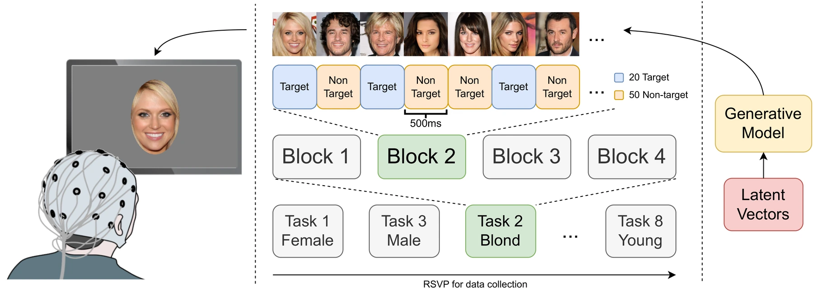
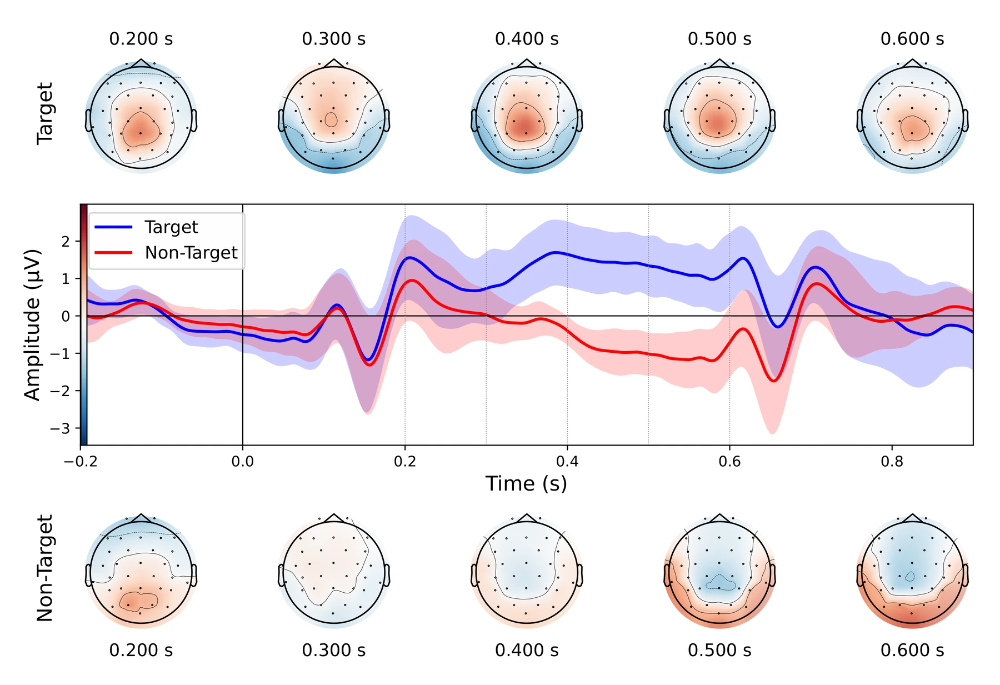
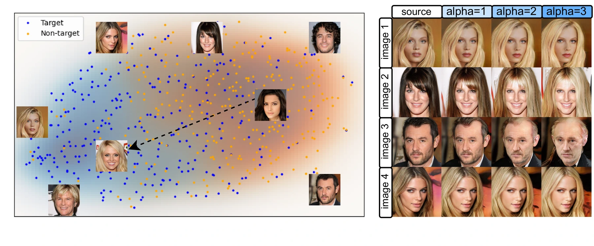

NeurIPS 2026 · Evaluations and Datasets Track
EEGFaceSem
An EEG Benchmark with Paired Generative Latents for Semantic Visual Modeling
1 University of Helsinki2 University of Macau3 LUT University4 University of Copenhagen
EEGFaceSem records EEG while people view generated faces and attend to attributes such as smiling or blond hair. Pairing these responses with the generator’s latent vectors connects attention decoding to image editing and generation.
EEG responses, face images and generative latents
in one benchmark.
01 / The resource
A shared space for brain signals and images
EEGFaceSem pairs EEG recordings with generated face stimuli and the latent vectors used to produce them. These links support semantic decoding, representation learning, image editing and conditional generation.
A latent vector is the 512-number input that the progressive GAN uses to generate a face. Keeping this input alongside the stimulus and EEG makes it possible to study both how an image is represented in the brain and how its visual attributes can be changed.
- 30
- participants
- 8
- attention tasks
- 32
- EEG channels
- 512D
- generative latents

What participants do
Each task specifies one attended attribute: female, male, blond hair, dark hair, smiling, not smiling, old or young. Participants mentally note matching faces while watching the image stream. No button press is required during the recording.
Each task has four blocks of 70 images: 20 targets and 50 non-targets in random order. Across eight tasks, the design presents 2,240 trials per participant.
What an EEG example means
A target label means the displayed face matches the attribute attended to in that task. Each classifier predicts target versus non-target within a task.
The paper uses 32-channel EEG epochs from 200 ms before to 900 ms after image onset. Preprocessing includes a 0.2–35 Hz band-pass filter, baseline correction and automatic blink rejection.
See the task
This short demonstration shows the rapid sequence of generated face stimuli presented during EEG recording.
The public release includes EEG data, stimulus images, latent vectors, metadata and benchmark code. See the dataset documentation for file formats and preprocessing details.
Browse the dataset documentation →EEG responses to attended faces
Event-related potentials average the EEG response relative to image onset. At the Pz electrode, target faces produce a larger positive response around 250–600 ms, consistent with a P300 effect. This is a group-average view of the attention response; the benchmark below evaluates individual EEG trials.

02 / The benchmark
Decoding semantic attention
Predict target versus non-target EEG responses for each attention task. The benchmark covers learning within a participant, transfer to a held-out participant, and adaptation with that participant’s data.
Performance is measured with ROC AUC: 0.5 corresponds to chance ranking and 1.0 to perfect ranking. EEGNet has the highest mean AUC among the evaluated models in all three settings, reaching 0.8063 after participant-specific adaptation.
| Model | Within-participant | Cross-subject | Subject-adapted |
|---|---|---|---|
| LDA | 0.7206 | 0.6033 | — |
| Logistic regression | 0.7280 | 0.7397 | — |
| MLP | 0.6675 | 0.7392 | 0.7546 |
| EEGNet | 0.7416 | 0.7715 | 0.8063 |
| EEGPT | 0.6238 | 0.7003 | 0.6824 |
—: not reported for that setting. Full per-task results and variability are in the paper.
Within-participant
Five-fold evaluation using one participant’s data.
Cross-subject
Leave one participant out for testing; use another participant for validation.
Subject-adapted
Pretrain on other participants, then fine-tune on a subset of the target participant’s data.
RSVP controls and evaluation scope
Whole-block LDA evaluation yields a mean AUC of 0.7225, compared with 0.7206 using shuffled folds. Restricting the epoch to 0–0.48 s and retaining trials with non-target immediate neighbours gives 0.6002 AUC (subject-bootstrap 95% CI: 0.5859–0.6134). These controls cover LDA; they were not rerun for every model. The dataset uses controlled face stimuli and task-specific attention labels.
03 / Applications
From EEG responses to image edits
The paired latent vectors let models connect a neural response to an editable representation of the image that elicited it.

Learn a shared representation
Contrastive learning brings each EEG epoch together with the latent vector of its corresponding stimulus. The left panel visualizes the learned space with UMAP. Binary task labels are used to colour the points after training; the alignment itself uses EEG–latent pairs.
Learn an editing direction
An LDA model learns to distinguish target and non-target EEG responses from one participant. A linear support vector regressor then predicts the LDA scores from image latents. Its weight vector gives a direction that can be applied to new latents to change the generated face.
Conditional generation
The paper also explores an EEG decoder whose predicted task labels condition an adversarial autoencoder in the generator’s latent space. Changing the conditioning label produces paired images for comparison, with explicit-label and randomized-label conditioning as reference settings. The paper includes the architecture, training procedure and qualitative examples.
Scope. These experiments use generated faces and predefined attention tasks. The recorded signals include attention and P300 components. Continuous image presentation can produce overlapping responses, which motivates the RSVP controls reported above.
04 / Start here
Paper, data and code
The release is hosted on Hugging Face. Start with the dataset card for installation and loading examples, or browse the folders below for a specific component.
- data/
- Raw EEG, processed EEG and generative latents in separate folders.
- EEGFaceSem/
- Python package for loading EEG, matching image IDs to latents and running benchmarks.
Dataset: CC BY 4.0. Code: Apache 2.0. Consult the release documentation for individual components and usage conditions.
Cite EEGFaceSem
@inproceedings{ma2026eegfacesem,
title = {{EEGFaceSem}: An {EEG} Benchmark with Paired Generative Latents for Semantic Visual Modeling},
author = {Ma, Jun and Spap{\'e}, Michiel M. and Davis III, Keith M. and Ruotsalo, Tuukka},
booktitle = {Advances in Neural Information Processing Systems},
year = {2026},
url = {https://openreview.net/forum?id=s6avH9sqCU}
}